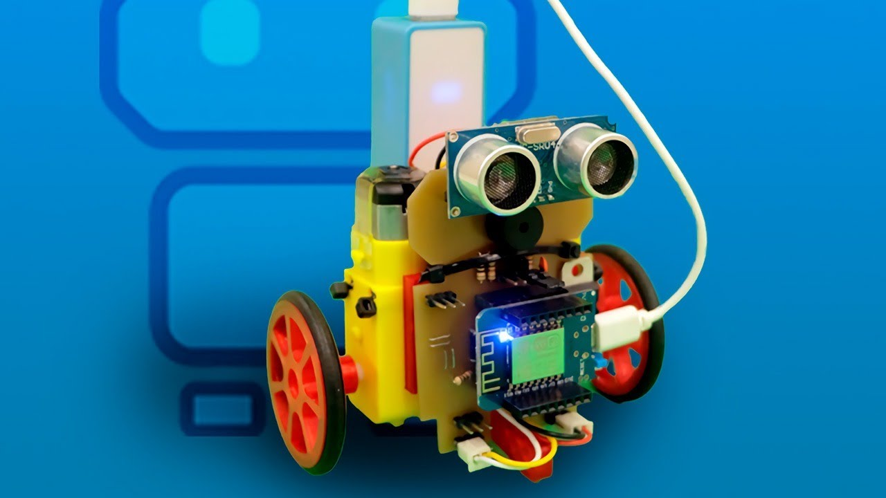

Mostrabot
O Mostrabot é um revolucionário assistente pessoal automatizado projetado para operar diretamente em dispositivos móveis. Este inovador robô virtual foi desenvolvido para simplificar tarefas cotidianas, oferecendo aos usuários uma experiência conveniente e eficienteㅤㅤㅤㅤㅤㅤㅤㅤ.

Placa Maker
A Placa Maker é uma plataforma que se destaca como um verdadeiro catalisador para a criatividade e inovação. Projetada para entusiastas, inventores e mentes curiosas, essa placa é muito mais do que um simples dispositivo eletrônico - é um convite para a expressão criativa e o desenvolvimento de soluções únicas.